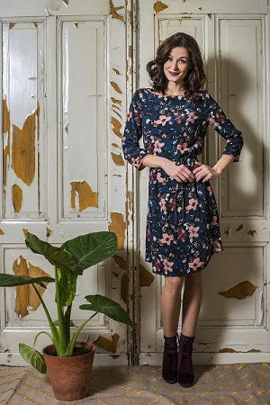

"Vrouwelijke jurkjes met franse allure in een stoer jasje : Dat is LE PEP."
"Vrouwelijke jurkjes met franse allure in een stoer jasje : Dat is LE PEP."
De jurkjes zijn vrouwelijk, vrolijk en hebben tegelijkertijd een strakke uitstraling. Ze zijn lieflijk maar ook een tikkeltje stoer. LE PEP jurkjes zijn gemaakt met ook voor detail: een mooie knoop, klein borduursel, fleurige randjes of een subtiel strikje.
LE PEP hecht waarde aan kwaliteit. Dit zie je terug in de mooie stoffen en in de pasvorm. De tricotstoffen zijn stevig en van hoge kwaliteit. Ook aan de pasvorm is veel aandacht besteed, zodat elke vrouw mooi tot haar recht komt.
Het fashion label LE PEP is in September 2012 in Nederland gelanceerd door Danielle Wagter- Huiden: een jurkaholic in hart en nieren. Al jaren had ze de droom een eigen jurkjeslijn op de markt te brengen. Jurken met oog voor detail, lief en stoer tegelijk: eigenschappen die ze in het huidige aanbod miste.
Inmiddels is de collectie uitgebreid tot een volledig aanbod. Orginele Rokjes worden gecombineerd met mooie tops. Ook voor de jurkjes zijn er bijpassende vestjes. Le Pep ontwikkeld zicht verrasend per seizoen.